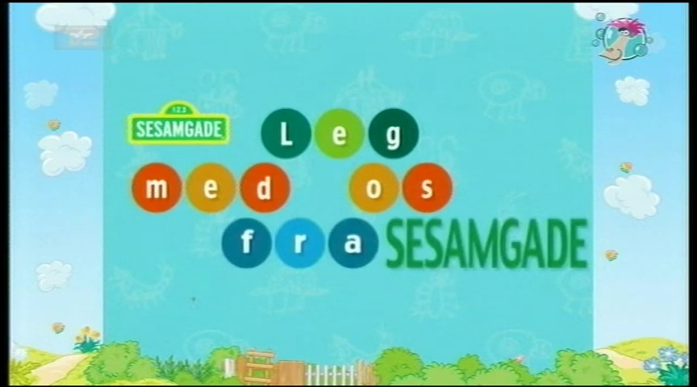

Leg med os fra Sesamgade
(Danish)
(4/78)

Title:
Leg med os fra Sesamgade
Seasons Dubbed: 2
Aired on: TV2 (formerly)
Note: The episodes are
shortened slightly.
DUBDB Article
WATCH
Season 1-2
(4 episodes)
archive.org